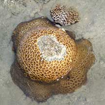
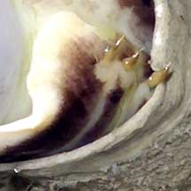
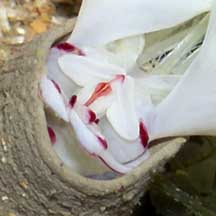
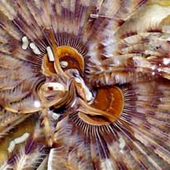
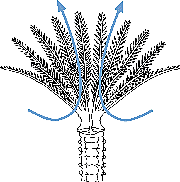

|
|
| worms text index | photo index |
|
worms > Phylum Annelida >
Class Polychaeta
> Order Sabellida > Family Sabellidae
|
| Fanworms Family Sabellidae updated Oct 2016
Where seen? Even those who find worms icky will be delighted by these elegant feathery creatures. They are more commonly seen on our Northern shores but also encountered on the Southern shores. They are found mainly in or near coral rubble areas. Some are found in the sand. There are large ones (about 8cm in diameter), small ones (2-3cm in diameter) and even tinier ones that can hardly be seen. These worms are wary, though, and will disappear instantly into their tubes are the slightest sign of danger. So you have to approach them stealthily. What are fanworms? Fanworms are segmented worms belonging to Family Sabllidae, Class Polychaeta, Phylum Annelida. The polychaetes include bristleworms, and Phylum Annelida includes the more familiar earthworm. The segmented portion of the fanworm is usually well hidden inside the tube like other tubeworms. fanworm features: The feathery fan that we see is stuck on the top of the worm's head! The circular fan is actually made up of two halves. Each long 'feather' of the fan is actually a modified tentacle called a radiole. Each radiole has many pinnules (feathery branches). |
 Growing in living hard coral. Pulau Hantu, Apr 07 |
 This fanworm is out of water. Its fan is collapsed, and its body segments clearly visible. Pasir Ris Park, May 09 |
 Tiny bristles on the segmented body. Changi, Jul 05 |
| Each pinnule is covered with cilia (tiny beating hairs). The cilia
generate a current, sucking water from below the fan, through the
pinnules and out through the centre of the fan (indicated by the blue
arrows). Cilia on the pinnules gather tiny food particles from the
current and send these to a groove along the length of each radiole.
Cilia in the groove sort out food particles by size as they bring
these particles to the central mouth. A pair of palps near the mouth removes particles which are too large: cilia on the palps carry these particles to the centre of the fan and toss them into the outgoing current. Only suitably small particles are eaten. Down the Tubes: fanworms live in a flexible, leathery tube. The tube is often much longer than the worm. Some fanworms have eye spots on their tentacles to detect movement. fanworms will slip instantly into their tubes at the slightest sign of danger. The tubes also keep them moist and safe on the rare occasions when they are exposed at low tide. fanworms don't have an operculum to close off their tube entrance. Instead, when they retreat into their soft tube, the tube entrance collapses to seal the opening. |
 Collar on a fanworm that is used to create the tube. |
 Pulau Hantu, Aug 04 |
 Current generated by the worm is in the direction of the blue arrows Pulau Sekudu, Aug 05 |
| How does a fanworm make its tube? Sand grains of suitable size are collected and stored in a sac. The
sand is mixed with mucus and extruded as a string of tube material.
The worm rotates its body to apply this string to the tube, to lengthen
or repair it. It moulds the string with a special fleshy fold of tissue near the top of its body (which looks like a shirt collar), almost like building a pot out of clay ropes. Similar worm: Feather-duster or 'Christmas tree fanworms' more familiar to divers belong to Family Serpulidae. These worms build hard tubes out of calcium, while fanworms' don't. Feather duster worms usually have an operculum to cover the tube opening, while fanworms don't. More on how to tell apart animals with a ring of feathery tentacles. Human uses: Unfortunately, fanworms are popular in the live aquarium trade and collected for this purpose. A fanworm (Sabella spallanzanii) introduced to Australian harbours and coasts is affecting some mussel farms because they grow on the lines meant for mussel larvae settlement. Dense growths of these worms foul up dredges and nets, overgrow seagrass and are such effective filter feeders that they deprive native filter feeders of food. Status and threats: Like other fish and creatures harvested from the wild, most die before they can reach the retailers. Without professional care, most die soon after they are sold. Often of starvation as owners are unable to provide the small creatures and plants that these fishes need to survive. Those that do survive are unlikely to breed. Like other creatures of the intertidal zone, they are affected by human activities such as reclamation and pollution. Poaching by hobbyists can also have an impact on local populations. |
| Some fanworms on Singapore shores |

| Family
Sabellidae recorded for Singapore from Wee Y.C. and Peter K. L. Ng. 1994. A First Look at Biodiversity in Singapore. and A Guide to Singapore Polychaetes by Lim Yun Ping 1997-2000 **from WORMS
|
Links
References
|